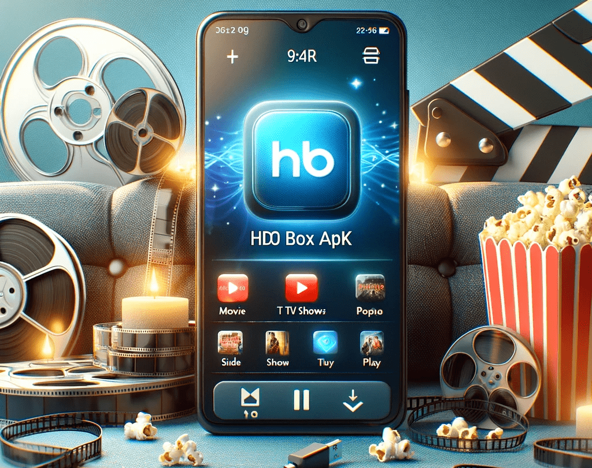

Everything You Need to Know About HDO Box APK: A Must-Have for Streaming Enthusiasts
If you’re someone who loves binge-watching movies and TV shows in the comfort of your home, you’ve probably heard about HDO Box APK. But if you haven’t, let’s dive into this exciting app that has become a go-to platform for streaming. From offering a wide variety of content to being incredibly easy to use, this APK has everything a movie lover or TV show binge-watcher could dream of.

HDO Box APK is a free streaming application that lets users access movies, TV shows, and documentaries from all over the world. Whether you’re a fan of classic films, the latest blockbusters, or indie gems, HDO Box has something for everyone. It’s like having a movie theater in your pocket—minus the overpriced popcorn!
Let’s take a closer look at the amazing features that make HDO Box APK stand out from the rest.
1. Huge Library of Movies and TV Shows
One of the most appealing features of HDO Box APK is its extensive library of movies and TV shows. Whether you're into action-packed thrillers, romantic comedies, heartwarming dramas, or horror flicks, you can find all of them here. The best part? It covers content from all genres, so there’s something for everyone, no matter what mood you're in.
You can easily search through the app’s vast collection by category or genre. There’s also a section for trending and newly released content, so you never miss out on the latest hits. So, if you’ve got a few hours to spare, you’ll always have a great selection to choose from.
2. Free Streaming – No Hidden Fees
Let’s face it, paid subscriptions can be a bit of a burden on your wallet, especially when there are so many streaming platforms to choose from. HDO Box APK is here to save the day with its completely free streaming service. No hidden fees, no paywalls—just download the app and start watching your favorite content right away.
This makes HDO Box APK a fantastic choice for anyone who’s looking to enjoy a wide range of content without breaking the bank. If you’re tired of juggling subscriptions or paying for multiple platforms, this app has got your back.
3. High-Quality Streaming
We all know how frustrating it is to watch a movie or show in poor quality. Whether it’s blurry visuals, audio that’s out of sync, or constant buffering, these issues can ruin the experience. Fortunately, HDO Box APK offers high-quality streaming that ensures a smooth and enjoyable viewing experience.
From HD to 4K quality, you can enjoy your favorite shows and movies in the best resolution possible. This feature makes it a top choice for those who prioritize quality content and want to enjoy their movies and TV shows without any hassle.
4. User-Friendly Interface
If you’re anything like me, you probably don’t want to spend ages trying to figure out how an app works. HDO Box APK understands this and delivers a clean, user-friendly interface that makes it easy to navigate. Whether you’re browsing for something specific or just exploring the different categories, everything is laid out in a simple and intuitive way.
The app’s layout is neat and organized, making it easy for both beginners and seasoned users to find what they’re looking for. The search feature is also fast and efficient, so if you know the name of the movie or TV show you want to watch, you can quickly locate it and start streaming.
5. No Registration or Account Required
Many streaming services require you to sign up, create an account, or log in before you can access content. Not with HDO Box APK! This app allows you to watch movies and TV shows without the need to go through the hassle of registering or creating an account.
Simply download the APK, install it, and you’re ready to go. No email verification, no password management, and no endless forms to fill out—just one click and you’re watching your favorite content. It’s that simple!
6. Support for Multiple Devices
Whether you’re watching on your phone, tablet, or smart TV, HDO Box APK has you covered. The app supports a wide range of devices, which makes it incredibly versatile. You can start watching a movie on your phone and then pick up where you left off on your TV, all without any interruptions.
This level of flexibility is especially great for people who enjoy streaming on different devices depending on their mood or location. Want to watch a movie in bed? Grab your phone. Want to enjoy a film on the big screen? Fire up your TV. With HDO Box APK, it’s all possible!
7. Fast Updates with New Content
Who doesn’t love staying up-to-date with the latest movies and TV shows? HDO Box APK ensures that its library is always fresh and filled with the most recent releases. Whether it's the latest blockbuster or an exclusive TV series, you’ll find new content added regularly.
This is great for those who are always on the lookout for the next big hit. You don’t have to wait weeks or months for new content to arrive—HDO Box APK keeps things current, so you’ll never be stuck searching for something new to watch.
8. Multiple Language Options
If you’re a global citizen, you’ll appreciate the multi-language support offered by HDO Box APK. The app includes content in various languages, making it accessible to users around the world. This means you can watch movies and TV shows in your preferred language, and even explore content from other cultures.
The subtitle options are also extensive, allowing you to watch movies and shows with subtitles in your language, if necessary. This adds an extra layer of convenience, especially for non-native English speakers.
9. Ad-Free Experience
Let’s be honest—ads can be super annoying, especially when you're deep into a movie or show. HDO Box APK delivers an ad-free streaming experience, so you can enjoy uninterrupted viewing. No annoying pop-ups, no commercial breaks, and no waiting for an ad to finish before continuing your movie.
This feature is a breath of fresh air, especially when compared to other streaming services that bombard you with ads every few minutes. HDO Box APK allows you to focus on what matters—enjoying your content.
10. Customization Options
If you like to have control over your streaming experience, you’ll love the customization options in HDO Box APK. The app allows you to adjust the video quality, audio settings, and even the subtitles to suit your preferences. Whether you want crystal-clear visuals, a better sound experience, or subtitles in a different language, HDO Box gives you the flexibility to tailor your viewing experience.
These customization options help ensure that you’re getting the most out of every movie or TV show you watch.
11. No Need for VPN
Many streaming apps are region-locked, meaning you can only access certain content depending on where you live. But with HDO Box APK, this is not an issue. The app doesn’t require a VPN to access international content, meaning you can enjoy movies and TV shows from all over the world without any geographic restrictions.
This is a big win for users who love watching international content or who live in regions with limited access to streaming services.
12. Regular Updates and Bug Fixes
HDO Box APK developers are committed to improving the app’s performance and user experience. The app receives regular updates to add new features, enhance the user interface, and fix any bugs or issues. This ensures that you’re always using the most up-to-date version of the app, and any glitches or bugs are promptly addressed.
Having a well-maintained app means fewer headaches and a smoother experience for you as a user. Plus, the regular updates keep the content fresh and relevant.
Conclusion
HDO Box APK is a fantastic streaming app that offers a wide variety of content, from the latest movies to classic TV shows. It’s free, easy to use, and supports a wide range of devices. With its high-quality streaming, no ads, and regular updates, it’s a must-have for anyone who loves entertainment.
So, if you haven’t already, give HDO Box APK a try. Whether you’re watching on your phone, tablet, or smart TV, you’ll enjoy a top-notch viewing experience with no fuss, no ads, and no hidden fees. Just good content at your fingertips—what more could you ask for?
Happy streaming!